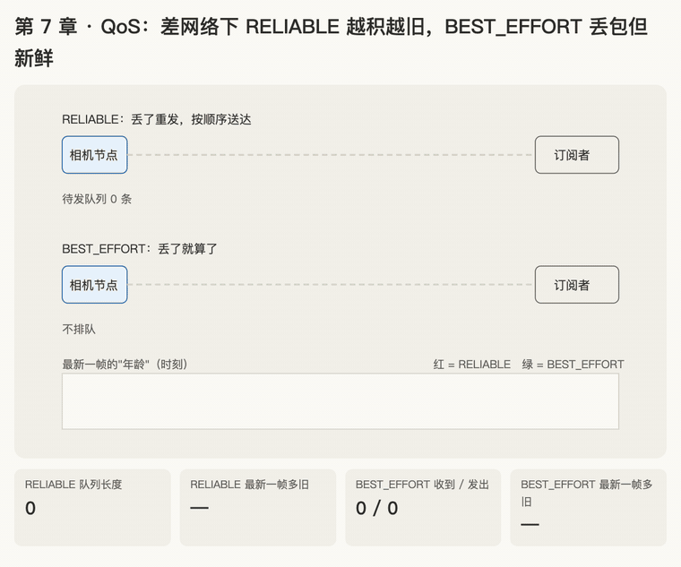

第 7 章 · 软件框架：ROS 2、中间件与实时系统
本章回答：机器人软件为什么要拆成很多进程？ROS 2 的节点、话题、服务、动作、QoS、tf、ros2_control 各是什么？实时部分怎么和非实时部分共存？
编写日期：2026-11-04 · 上一章：第 6 章 底层控制 · 下一章：第 8 章 自主栈 · 总览：00-overview.md
对应原文：本地 ROS 2 官方文档：ros2/materials/ros2_documentation/source/ROS-Framework/interfaces/topics/About-Quality-of-Service-Settings.rstL60–L61（best effort / reliable）、L112（默认 keep last 10 + reliable）；ros2/materials/ros2_documentation/source/ROS-Framework/interfaces/About-Tf2/About-Tf2.rstL31–L32（tf2 按时间缓存坐标树）；ros2/materials/design/articles/qos.md（QoS 设计文章）
本章缩写：ROS 2（第 1 章）；QoS = Quality of Service（服务 / 质量）；rmw = ROS middleware（ROS 中间件接口）；DDS = Data Distribution Service（数据 / 分发 / 服务）；SHM = shared memory（共享内存）；NAT = Network Address Translation（网络 / 地址 / 转换）；tf2 = transform library 第 2 版（坐标变换库）；REP = ROS Enhancement Proposal（ROS 改进提案）；AMCL = Adaptive Monte Carlo Localization（自适应 / 蒙特卡洛 / 定位）；OMPL = Open Motion Planning Library（开源 / 运动规划 / 库）；Nav2 = Navigation 2（ROS 2 导航栈）；RViz = ROS Visualization（ROS 可视化）；LTS = Long-Term Support（长期 / 支持）；SCHED_FIFO = scheduling first-in first-out（先进先出实时调度）；isolcpus= isolate CPUs（隔离 CPU 核）；mlockall= memory lock all（锁住全部内存不换出）；CPU（第 5 章）；LCM = Lightweight Communications and Marshalling（轻量 / 通信 / 与编组）；dora-rs = Dataflow-Oriented Robotic Architecture（面向数据流的机器人架构，Rust 写）；SDK = Software Development Kit（软件 / 开发 / 工具包）；MCAP：rosbag2 默认的录包文件格式名（官方文档没给全称）；AI = Artificial Intelligence（人工 / 智能）。全部缩写见 附录 · 缩写与术语表
讲解
第 1 步：为什么要中间件
白话类比：广播电台。相机节点像电台，只管往"/camera/image"频道播；谁想听就调到这个频道，电台不用知道有几个听众。新加一个检测模块，不用改相机的代码。
机器人软件拆成很多独立进程（节点），好处：
- 一个模块崩了不拖垮全部；
- 不同语言（C++ 控制、Python 模型）可以混用；
- 能录下所有消息回放调试（rosbag2 / MCAP）；
- 社区现成模块（导航、规划、驱动）直接拿来用。
第 2 步：ROS 2 的四种通信
| 方式 | 模式 | 例子 | 特点 |
|---|---|---|---|
| 话题 Topic | 发布 / 订阅，多对多 | /camera/image、/joint_states、/cmd_vel |
流式数据，最常用 |
| 服务 Service | 请求 / 应答 | "重置里程计"、"查询地图" | 短时调用，会阻塞等待 |
| 动作 Action | 目标 + 持续反馈 + 结果，可取消 | "导航到厨房"、"执行这段轨迹" | 长时间任务 |
| 参数 Parameter | 每个节点的配置 | 控制增益、话题名 | 可运行时修改 |
底层传输：ROS 2 通过 rmw 抽象层接 DDS（Fast DDS、Cyclone DDS 等）；Zenoh（rmw_zenoh）是近两年的新选择，跨网络、穿 NAT 更方便。同机大数据（图像、点云）可用共享内存 / 零拷贝（如 iceoryx、Fast DDS SHM）。
第 3 步：QoS：每个话题要什么样的"快递服务"
| QoS 项 | 选项 | 用在哪 |
|---|---|---|
| Reliability | RELIABLE（丢了重发）/ BEST_EFFORT（丢了就丢） |
指令、地图用 RELIABLE；相机、点云、高频状态用 BEST_EFFORT |
| History / Depth | 保留最近 N 条 | 控制类只要最新 1 条 |
| Durability | VOLATILE / TRANSIENT_LOCAL（后加入的订阅者也能收到最后一条） |
静态地图、机器人描述 /robot_description |
| Deadline / Liveliness | 多久没消息算异常 | 安全监控 |
关键直觉：在差网络（Wi-Fi）上传高频数据时，RELIABLE 会不停重发，消息排队越来越长，你收到的是越来越旧的数据；BEST_EFFORT 会丢一些，但收到的都是新鲜的。对控制来说，"新鲜"比"完整"重要。发布方和订阅方 QoS 不兼容时会直接收不到——新手最常见的"怎么没数据"。
第 4 步：tf2：所有东西"在谁的坐标系里"
机器人里有几十个坐标系：map、odom、base_link、各连杆、camera_link、gripper……tf2 维护一棵随时间变化的坐标树，你可以问："0.2 秒前，相机坐标系里的这个点，在 base_link 里是哪？"
- 静态变换（相机装在哪）来自 URDF 或标定结果（第 4 章）；
- 动态变换（关节角）由
robot_state_publisher根据/joint_states和 URDF 做 FK（第 2 章）实时发布； map → odom → base_link是导航的标准约定（REP-105）。
第 5 步：ros2_control：硬件抽象层
上层（MoveIt 2 / Nav2 / 你的 VLA 节点）
│ action / topic：轨迹、速度指令
┌──────▼──────────────── controller_manager（实时循环）──────┐
│ 控制器插件：joint_trajectory_controller、diff_drive_controller、 │
│ admittance_controller、自定义控制器 │
│ │ command interfaces（position / velocity / effort） │
│ │ state interfaces（position / velocity / effort） │
│ 硬件插件 hardware_interface：read() → update() → write() │
└──────┬───────────────────────────────────────────────────┘
│ 厂商 SDK / EtherCAT / CAN
真实硬件，或仿真（Gazebo / MuJoCo / Isaac 的 ros2_control 插件）
好处：同一套控制器和上层代码，换硬件只换 hardware_interface 插件；仿真和真机切换也只改一行配置。
第 6 步：ROS 2 生态里的大模块
| 模块 | 做什么 |
|---|---|
| MoveIt 2 | 机械臂运动规划（OMPL 采样规划、碰撞检测、IK、轨迹时间参数化），MoveIt Servo 做实时遥操作 |
| Nav2 | 移动机器人导航：定位（AMCL）、代价地图、全局 / 局部规划、行为树调度 |
| slam_toolbox / Cartographer | 2D / 3D 建图 |
| rosbag2（MCAP 格式） | 录制回放；Foxglove 可视化 |
| RViz2 | 3D 可视化 |
发行版：Humble（2022，LTS）、Jazzy（2024，LTS）、Kilted（2025）、Lyrical（2026，LTS）。新项目一般选最新 LTS。
第 7 步：实时：ROS 2 本身不保证，要自己保证
ROS 2 的 DDS、Python、动态内存分配都可能带来毫秒级抖动。工程上的做法：
- 操作系统：PREEMPT_RT 内核（Linux 6.12 起已入主线）、CPU 隔离（
isolcpus）、把控制线程设成SCHED_FIFO高优先级、锁内存（mlockall）。 - 控制循环里不做：动态分配内存、打日志、加锁等慢线程、走网络。
- 数据交换：实时线程和非实时线程之间用无锁队列 / 双缓冲（ros2_control 的
RealtimeBuffer）。 - 更硬的部分下沉：1 kHz 以上的环交给独立控制板（第 5 章）。
替代方案：LCM（MIT，轻量，Cheetah 系常用）、dora-rs（Rust 数据流框架，面向 AI 机器人，零拷贝）、各公司自研共享内存框架。很多人形公司"上层用 ROS 2、底层自研实时框架"。
动画演示

可交互版：animations/07-ros2-qos.html（拖动丢包率）。
怎么看：
- 相机节点每个时刻发一条消息（彩色点），经过一条丢包率 35% 的 Wi-Fi 送到订阅者。链路每个时刻最多发 1.25 次。
- 上面 RELIABLE：丢了就重发，所有消息都会到，但队列越积越长，"收到的最新一帧有多旧"一直往上涨。
- 下面 BEST_EFFORT：丢了就算了（红叉），收到的帧数少一些，但每一帧都是几乎刚拍的。
- 把丢包率拖到 5%，两者差不多；拖到 40%，RELIABLE 的延迟会失控。
公式
| 名称 | 式子 |
|---|---|
| 可靠传输需要的发送次数 | 每条平均 \(1/(1-p)\) 次（丢包率 \(p\)） |
| 队列不爆的条件 | 发布速率 \(\times \dfrac{1}{1-p}\) < 链路容量 |
| 坐标变换链 | \({}^{A}T_{C} = {}^{A}T_{B}\,{}^{B}T_{C}\) |
练习与作答记录
题 1：一个 30 Hz 的相机话题通过 Wi-Fi 传给笔记本上的可视化工具，画面越来越卡、延迟越来越大。你会先改哪个 QoS 设置？为什么？
作答：（待作答）
题 2：tf2 里查询"0.1 秒前相机坐标系的点在 base_link 里在哪"，为什么必须带时间戳？如果直接用"当前"的变换会怎样？（联系第 4 章）
作答：（待作答）
题 3：ros2_control 把控制器和硬件分开成插件，对"先在仿真里调好、再上真机"有什么帮助？
作答：（待作答）
口诀
节点像电台，话题像频道；服务一问一答，动作有进度能取消。
差网络里控制要新鲜不要完整；ROS 2 不保证实时，实时要自己隔出来。
本章复习卡片
A19 话题 / 服务 / 动作、A20 QoS RELIABLE vs BEST_EFFORT、A21 ros2_control 与实时隔离（见 review.md）
附录 · 延伸阅读
留给以后深入学习用，不影响本章主线。★ 是建议先读的。
推荐阅读
- ★ Macenski, Foote, Gerkey, Lalancette, Woodall，"Robot Operating System 2: Design, Architecture, and Uses in the Wild"，Science Robotics 2022：ROS 2 设计总览。
- ★ ROS 2 官方文档（docs.ros.org）：Concepts（Nodes / Topics / Services / Actions / QoS）、ros2_control 文档（control.ros.org）。
- Macenski et al.，"The Marathon 2: A Navigation System"，IROS 2020：Nav2 架构。
- Coleman et al.，"Reducing the Barrier to Entry of Complex Robotic Software: a MoveIt! Case Study"（2014）：MoveIt 架构。
- Foote，"tf: The transform library"（2013）；REP-105（坐标系约定）、REP-103（单位与方向约定）。
- Huang, Olson, Moore，"LCM: Lightweight Communications and Marshalling"，IROS 2010。
- dora-rs 项目文档；Eclipse Zenoh / rmw_zenoh 文档。
- 本仓库：ros2 专题（官方文档已归档，按阶段 A–I 动手）。
数学原理
- 排队论直觉：到达速率 > 服务速率时队列无界增长。
- 几何级数：重传次数期望 \(\sum_k k(1-p)p^{k-1} = 1/(1-p)\)。
- 坐标变换的复合与求逆。
公式清单
见正文"公式"一节的表。
代码对照：把本章的数字用代码算一遍
用 Python + NumPy（Numerical Python：数值 / Python）把讲义里讲过的数算一遍，不算练习题。代码在仓库本地
robot-system-architecture/solutions/chapter-code/ch07_ros2_middleware.py，配套测试tests/test_ch07.py，notebook 在notebooks/ch07_ros2_middleware.ipynb。Mac 上直接能跑，不需要 GPU：
bash cd robot-system-architecture/solutions/chapter-code uv run python ch07_ros2_middleware.py # 一步一步打印 uv run pytest tests/test_ch07.py
讲义 ↔ 代码（QoS 的数字照动画：每时刻发 1 条、链路 1.25 次/时刻；坐标变换的位姿是编的）：
| 讲义 | 公式 | 写法 | 跑出来 |
|---|---|---|---|
| 公式表 重发次数 | \(1/(1-p)\) | expected_sends、monte_carlo_sends |
p = 0.35：公式 1.538，模拟 1.536 |
| 公式表 队列不爆 | 速率 × \(1/(1-p)\) < 容量 | queue_ok(1.0, p, 1.25) |
p = 0.05 能跟上；0.35 跟不上；临界 0.20 |
| 第 3 步 / 动画 | RELIABLE vs BEST_EFFORT | simulate_qos(p) |
p = 0.35：RELIABLE 旧 31 个时刻，BEST_EFFORT 旧 1 个、收到 60% |
| 第 4 步 tf 变换链 | \({}^AT_C = {}^AT_B\,{}^BT_C\) | se2(...) @ p |
相机系 (1, 0) → base_link 系 (0.2, 1.0)，逆变换变回去 |
关键几行：
while credit >= 1.0: # 这个时刻链路还能发一次
credit -= 1.0
if queue and rng.random() > p: # 没丢：队头那条送达；丢了：下次重发同一条
rel_last = queue.pop(0)
if rng.random() > p: # BEST_EFFORT：只发这一刻最新的，丢了就算了
be_last = t
代码里才看得到的 2 件事：
rng.geometric(1 − p)正好是"一直重发直到成功，一共发了几次"的分布，平均值就是 \(1/(1-p)\)。- 平面坐标变换用 3×3 齐次矩阵，点要写成 (x, y, 1)；最后那个 1 让平移也能写成矩阵乘法。三维 tf2 里是 4×4，道理一样。
自己改一改（不影响练习答案）：
- 把丢包率改成 0.20（临界值）和 0.25，跑长一点（
ticks=2000），看 RELIABLE 的延迟怎么变。 - 再串一个变换（夹爪在相机前方），用两次矩阵乘法把夹爪上的点变到 base_link 系。